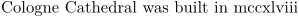

Syntax (autogenerated)
| \romannumerals{...} | |
| {...} | number |
Syntax
| \romannumerals{...} | |
| {...} | number |
Description
Print a number in lowercase roman numerals.
Example
-
\setuppapersize[A5] Cologne Cathedral was built in \romannumerals{1248}
- 
See also
- \defineconversion
- \characters
- \Characters
- \numbers
- \Numbers
- \mediaeval
- \romannumerals
- \Romannumerals
- \greeknumerals
- \Greeknumerals
- \oldstylenumerals
- \oldstyleromannumerals
Help from ConTeXt-Mailinglist/Forum
All issues with: